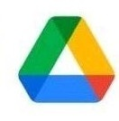
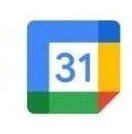
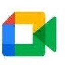
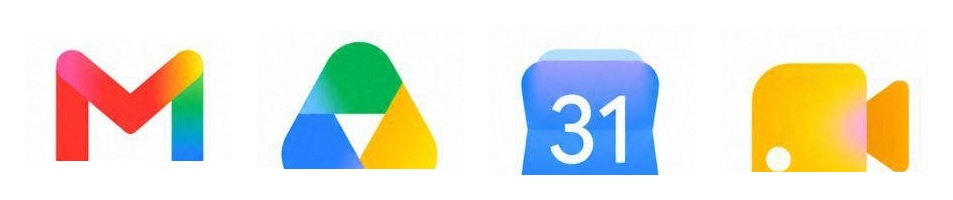
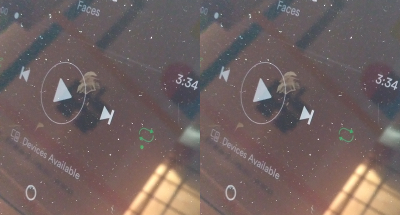
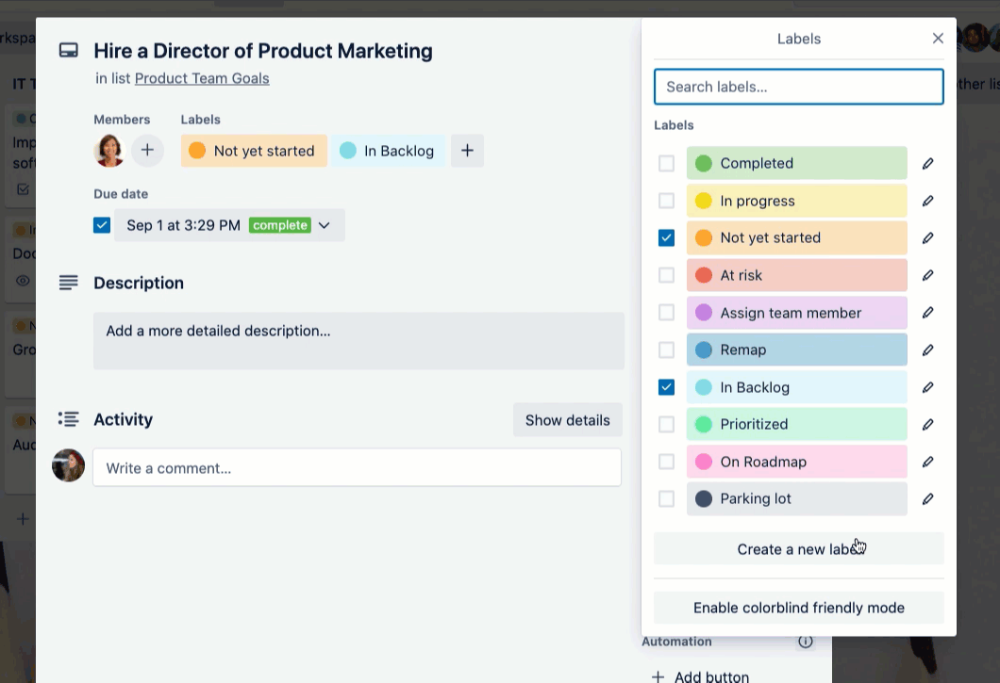
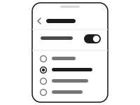
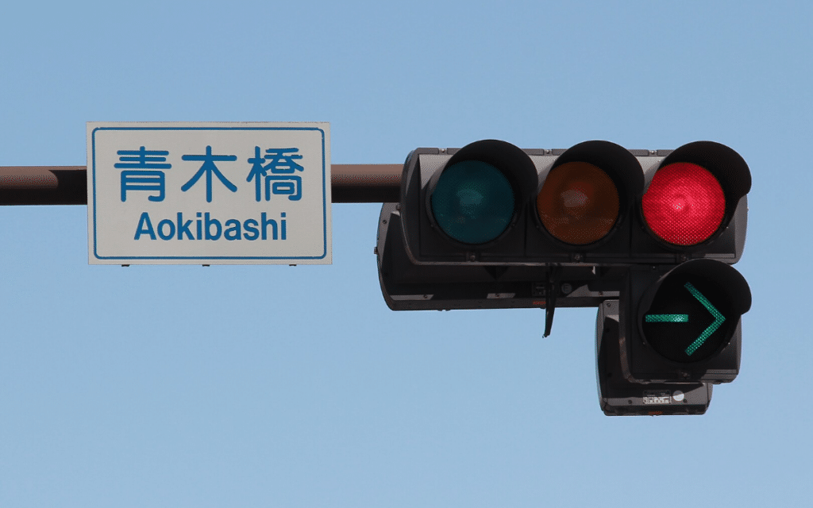
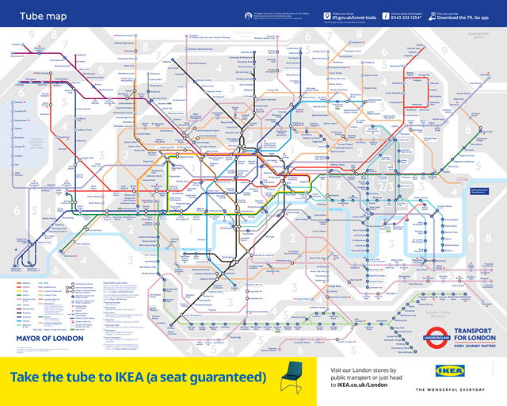

第一节色觉障碍是什么，有多常见
色觉障碍（colour vision deficiency，常被称为"色盲"或"色弱"）指的是视网膜中负责分辨颜色的视锥细胞在感光特性上出现偏差，导致某些颜色之间的差异变得难以分辨。它不是视力模糊，也不是"看不见东西"；大多数情况下，视野、清晰度和亮度感知都是正常的，只是颜色这一层信息比常人少了一部分。
就人数而言，色觉障碍并不罕见。按照 Colour Blind Awareness 汇总的估计，全球约有 3 亿人受影响，其中男性约为十二分之一（约 8%），女性约为两百分之一（约 0.5%）。把这个比例放回具体场景：一个四十人的班级里通常会有一到两名男生受影响；一间中等规模的办公室、一节地铁车厢、一场几百人的报告会，几乎都必然包含若干色觉障碍者。
患病率概览
| 群体 | 估计比例 | 说明 |
|---|---|---|
| 男性 | 约 1/12（8%） | 以欧洲白人男性数据为主 |
| 女性 | 约 1/200（0.5%） | 与 X 连锁遗传方式有关 |
| 全球总数 | 3 亿人以上 | 各类色觉障碍合计 |
| 中国男性 | 约 4.71% | 东亚人群比例低于欧洲人群 |
| 中国女性 | 约 0.67% | — |
来源：Colour Blind Awareness 患病率估计；Birch (2012) 全球患病率综述；中国数据见第十节。
一个容易被忽略的事实是：许多人在很长时间里并不知道自己有色觉障碍。因为从出生起看到的世界就是这样，没有可供比较的参照，很多人是在入学体检、参军体检或高考前体检时才第一次得知；也有人终生都不知道。这一点会直接影响到后面几节要谈的问题——当一个人自己都不确定"我是不是看错了"时，他更倾向于把困难归因于自己不够仔细，而不是归因于设计。
第二节主要有哪几种类型
色觉障碍并不是单一的一种情况。按照受影响的视锥类型，通常分为以下几类，它们在患病率和具体表现上差别很大。
- 绿色盲 / 绿色弱deuteranopia / deuteranomaly · 最常见
- 红色和绿色会变得非常接近，看起来像是混在一起的暗色。这是最常见的一类，男性色觉障碍者中占比最高。
- 红色盲 / 红色弱protanopia / protanomaly
- 红色会明显变暗，并且常常与棕色、深绿色混在一起。深红、深棕、深绿三者之间几乎没有可靠的差别。
- 蓝黄色盲tritanopia · 罕见
- 蓝色与绿色容易混淆，黄色有时会变淡甚至偏粉。这一类患病率远低于红绿类，且与性别关系不大。
- 全色盲achromatopsia · 极罕见
- 基本上只能感知明暗，没有颜色信息，并且通常伴随明显的畏光——强光环境下反而更难看清。
需要说明的是，"盲"这个字在中文里容易造成误解。除极罕见的全色盲外，多数色觉障碍者并非完全看不到某种颜色，而是分辨能力下降：在颜色差异足够大、光线足够好、面积足够大的情况下他们可以分辨；一旦颜色接近、色块很小、或者光线不佳，分辨就会失败。这解释了为什么同一个人有时"看得出来"、有时"看不出来"——这不是态度问题，而是条件问题。
同一组颜色，在四种色觉下分别是什么样
四个圆点的原始颜色为红、绿、蓝、黄。模拟基于二色视矩阵，是近似结果，不等于任何一位具体使用者的真实感知——个体差异很大，多数人属于程度较轻的"色弱"而非"色盲"。
第三节成因：为什么会这样
Simunovic 在《Eye》上的综述中解释，常见的先天性色觉障碍主要与 X 连锁遗传以及视锥色素通路的变异有关。负责感知长波（红）和中波（绿）的视锥色素基因位于 X 染色体上，因此男性只要单条 X 染色体上的相关基因发生变异就会表现出来，而女性需要两条 X 染色体同时携带才会表现——这就是男女患病率相差十几倍的原因。
这一点在实践中的含义很直接：色觉障碍是生理层面的，不会因为使用者"再仔细看看"、"多花点时间"或"更认真一些"而改善。当一个界面把关键信息完全交给颜色来承载时，对这部分用户而言，那条信息在客观上就是不存在的，无论他们多努力。因此，解决方案不应该落在使用者身上，而应该落在界面本身——补上文字、形状、位置、纹理这些不依赖色觉的额外线索。
第四节日常生活中的典型困难
色觉障碍造成的困难，很少表现为某一件重大事故，更多是大量小事的反复累积。以下八类场景在公开访谈、社区自述和无障碍研究中反复出现，可以视为代表性的困难类型。
4.1 衣物：淡粉与浅灰的混淆
淡粉色与浅灰色是一组有文献记录的混淆色对。对红绿色觉异常者来说，一件亮粉色的衬衫可能被读作中性灰。Colour Blind Awareness 指出红绿色觉异常是最常见的类型；在 Datawrapper 的访谈中，多位受访者提到他们在选择衣物时需要请他人确认颜色，或者依赖购买时记住的标签。
来源：Colour Blind Awareness；Datawrapper 访谈
4.2 食物：成熟度与熟度的判断
番茄是否成熟、肉是否煮熟，在通常做法中主要依靠颜色判断。当红、绿、棕在视觉上过于接近时，这条判断路径就失效了。受访者普遍提到他们改用替代策略：依靠手感和硬度、依靠烹饪时间、依靠气味，或者直接询问他人。这类替代策略是有效的，但它们要求额外的认知投入，并且在涉及食品安全时存在风险。
来源：Colour Blind Awareness；Datawrapper 访谈
4.3 交通信号：依靠位置而非颜色
对许多红绿色觉异常者而言，交通信号灯的三个灯在颜色上区分度有限，真正可靠的线索是灯的位置——竖排信号灯中最下方（或最上方，视地区标准而定）的那一盏。这一策略在标准竖排信号灯下有效，但在横排信号灯、临时信号灯或单灯闪烁的情况下会明显减弱。
日本在 1973 年将通行灯在法规上定义为「青」（蓝），并将其实际色彩向蓝绿端调整，正是为了增加通行灯与红灯之间的可分辨性。许多日本路口还额外配置了倒计时显示和声音提示，使颜色之外还有其他线索可用。
来源：交通无障碍案例；日本信号灯案例
4.4 表单：红框表示错误，绿框表示正确
大量表单系统使用红色边框标示填写错误、绿色边框标示通过校验。如果这两种颜色对使用者而言难以区分，那么"哪一栏填错了"这条信息就完全无法获得，使用者只能逐栏重新核对内容本身。公开访谈中，这类情况反复出现：红色错误提示、绿色状态指示、彩色邮件标记——在色觉障碍者那里，这些提示近似于不存在。补充一行文字说明或一个图标，就能从根本上改变这一处境。
来源：Datawrapper 访谈；The Verge 个人文章
4.5 状态指示灯：电梯、仪表盘与遥控器
电梯按钮的选中状态、家电的工作状态、遥控器的模式指示，普遍采用"一圈颜色亮起"的方式表达。如果没有伴随的文字、形状变化或足够的亮度差异，这圈光对相当一部分用户等同于没有。在电梯这类有时间压力的场景中（门在数秒后关闭），核对成本会被进一步放大。
4.6 图表：以颜色区分数据系列
用不同颜色区分折线或柱状图中的多个系列，是数据可视化中最常见的做法。中红与中绿、亮绿与黄色、粉色与灰色都是常见的混淆组合。当一张图有五条以上的彩色系列时，色觉障碍者往往需要依靠图例顺序和位置记忆来推断，而不是直接读图。
无障碍检测数据显示这个问题的规模：WebAIM Million 2026 对一百万个网站首页的自动检测发现，95.9% 的首页存在可检测到的 WCAG 问题，其中 83.9% 存在低对比度文字。
来源：Colour Blind Awareness；WebAIM Million 2026
4.7 购物：货架与网购中的颜色选择
对红色盲者来说，深棕、深绿和深红在视觉上可能几乎没有区别。线下购物时可以询问店员，线上购物则更困难——"石头色"、"灰褐色"、"雾霾蓝"这类商品颜色命名，对本身就无法分辨该差异的用户不提供任何实际信息，而商品图的显色又受屏幕和光照影响。
来源：Colour Blind Awareness；The Verge 个人文章
4.8 线路图：地铁与路线导航
地铁线路图传统上以颜色作为线路的主要标识。当红线与绿线在视觉上过于接近时，换乘判断就会出错，而这类错误的代价是实际的：坐反方向、错过换乘、在陌生站点滞留。加入线路编号、字母代码、站点编号和线路名称之后，颜色就不再是唯一线索，即使在灰阶条件下也能正确识读。
来源：Colour Blind Awareness；地铁线路编号案例
小结
上述八类场景有一个共同的结构：信息本身是存在的，但它被完全编码在颜色这一个通道里。对色觉障碍者而言，这等于信息在传输过程中被丢失。丢失的不是理解能力，而是信道。
第五节当事人如何描述这些困难
以下内容根据公开访谈、第一人称文章和中文社区自述整理，为转述而非逐字引用；情境来自真实经历，表达经过改写。
一位在职设计师表示，当图表中出现五条红绿配色的折线时，他通常不会在会议现场提问，而是等会议结束后再私下向同事确认哪条线代表本部门的数据。他提到，当场打断会议会带来社交上的尴尬。 职场 · 颜色编码图表
一位通勤者提到，停车场使用红绿指示灯显示车位占用状态时，他基本处于猜测状态，只能把车开近一些查看标识，同时承受后方车辆的等待压力。 公共空间 · 状态指示灯
一位学生描述，他买过一件自认为是灰色的毛衣，室友告诉他那是淡紫色。他表示，如果没有人主动提醒，他不会察觉这一差异。 购物 · 衣物颜色混淆
一位经常在家做饭的受访者说，他不敢仅凭颜色判断番茄是否成熟或牛肉是否煮熟，而是依靠计时、触摸质地和气味，因为依靠红色判断在他这里并不安全。 家庭 · 食品与安全
一位中国学生提到，他是在高考前的体检中才得知自己有色觉异常。他表示，那一刻他意识到专业选择不仅取决于自己想报什么，还取决于哪些专业允许他报考。 教育 · 体检筛查
来源：Datawrapper 访谈（受访者提到图表、衣物、LED 指示、烹饪和游戏中的颜色问题）；The Verge 第一人称文章（涉及停车指示灯、食物颜色、Wordle 与界面无障碍）；复数实验室 / 澎湃的中文社区分析（涉及体检、升学选择与相关社交处境）。
第六节"矫正眼镜"能解决问题吗
近年流传较广的一类视频是：色觉障碍者戴上特制眼镜后情绪激动，表示第一次看见某种颜色。视频通常在此结束。但如果把厂商的用户调查数据和独立的临床研究数据并列，情况会复杂得多。
| 类别 | 指标 | 结果 |
|---|---|---|
| 用户调查 （主观感受） | 愿意把这副眼镜推荐给朋友 | 90% |
| 表示这副眼镜"改变了我的人生" | 55% | |
| 认为生活质量有所改善 | 64% | |
| 临床研究 （客观测量） | 在标准色觉测试上出现改善的受试者 | 10 人中 2 人 |
| 与安慰剂镜片相比的差异 | p = 0.79，无显著差异 | |
| 镜片诱发新的蓝黄色觉缺陷 | 存在此风险 |
换句话说，"感觉看见了更多"与"在测试中确实分辨得更准"并不是同一件事。这类镜片通过选择性削弱特定波段来增强某些颜色之间的对比，主观上会带来明显的视觉变化，但这种变化未必对应色觉分辨能力的真实提升，并且可能在另一个维度上引入新的偏差。相关产品 269–699 美元的定价，恰好落在这道差距上。
厂商本身也说明该产品不是治愈方案，且并非对所有人有效。因此，把改善的责任交给使用者去购买设备，并不是一条可靠的路径；更可行的做法是在设计端解决问题。
来源：Blake Porter 用户调查；Almutairi 等，临床论文（太平洋大学）
第七节界面和标识可以怎么改
核心原则只有一条：颜色可以继续使用，但不能让颜色单独承担信息。以下五个例子对应第四节中提到的困难场景，说明补充线索之后的差别。
7.1 柱状图 —— 加纹理，加直接标注
原状：四根柱子使用四种颜色区分。在部分色觉条件下，其中两到三根几乎没有区别。
改进：为每根柱子加上不同的填充纹理（斜线、圆点、网格、竖线），并在柱子上或旁边直接标注系列名称。颜色保留，但已不是唯一线索。
7.2 交通信号灯 —— 加形状，加倒计时
原状：三个相同形状的圆灯。颜色接近时只能依靠位置判断；遇到横排信号灯时，位置线索也可能失效。
改进：使用不同形状（如方形通行标志与圆形禁止标志）、加入数字倒计时、并将通行灯调整为偏蓝绿的色调。线索从一条增加到三条。
7.3 表单校验 —— 加图标，加一句说明
原状：红色边框表示错误，绿色边框表示通过。两种颜色难以区分时，错误标示等同于未标示。
改进：在出错栏位加上「✕」图标，在通过栏位加上「✓」图标，并直接写出错误原因，例如"这个日期不存在——请检查月份"。颜色保留，但使用者不必依赖颜色。
7.4 地铁线路图 —— 加线型，加线路名
原状：两条线路仅以颜色区分。看错即意味着坐向城市的另一端。
改进：将其中一条改为虚线或加入重复纹理，并为两条线路标注名称与编号。即使整张图转为灰阶，线路仍可区分。
7.5 项目管理标签 —— 加图案，加文字状态
原状：看板上的标签仅为几条颜色。红、绿、黄一旦混淆，整块看板就无法表达优先级。
改进：为每个标签加上不同图案，并写出文字状态（"紧急"、"已完成"、"待确认"）。颜色保留，但任务状态不再仅靠颜色区分。
第八节现实中已经做出的改变
以下做法已经出现在产品、法规和设计系统之中。它们的共同点很简单：重要信息不交给颜色单独承担。
8.1 形状、符号与纹理（应用与游戏）
Google 在 2020 年的 Workspace 图标系列容易混淆——Gmail、Drive、Calendar、Meet 都采用了相似的四色圆角方块，轮廓高度接近。2026 年的改版把各应用的轮廓与主色调明显拉开。Spotify 用一个小圆点标示已开启的按钮；Trello 的色盲模式会为标签加上图案。颜色仍在，但旁边多了一条线索。
补充线索的收益不限于色觉障碍者：在强光下、低亮度屏幕上，或注意力分散时，普通用户同样受益。






8.2 系统级色彩滤镜（iOS 与 Android）
iOS 与 Android 都内置了色彩滤镜功能，可按红盲、绿盲、蓝黄盲分别调整。它作用于整个屏幕而非单个应用，因此在任意界面中都持续有效。iOS 中称为「色彩滤镜」，Android 中称为「色彩校正」，均位于「辅助功能 → 视觉」中。

8.3 偏蓝的通行灯（日本，自 1973 年）
1973 年，日本在法规上将通行灯定义为「青」（蓝），并将实际色彩向蓝绿端调整，使红绿色觉异常者更容易将通行灯与红灯区分开。许多路口还额外加入了倒计时与声音提示。


8.4 数据可视化配色（Cividis 与 ColorBrewer）
ColorBrewer 与 Cividis 在设计配色方案时，同时考虑色觉模拟结果与明暗变化。Cividis 的设计重点在于让明暗顺序在常见色觉障碍条件下仍然可读，因此这类色带不仅普通视觉能读，红绿与蓝黄色觉障碍用户也能读。

8.5 标准与法规（WCAG 与 Section 508）
WCAG 2.2 的成功准则 1.4.1 与美国 Section 508 都有明确规定：不能仅依靠颜色来传达信息、指示操作、提示反应或区分视觉元素。这条规则已经写入美国法律、欧盟 EN 301 549 标准，以及多个国家的政策文件。

8.6 线路图案与编号（伦敦地铁）
在收到色觉异常乘客的反馈后，伦敦交通局在线路图中加入了重复纹理与更大的线路编号。即使颜色被混淆或被滤除，线路仍然可以识别。

8.7 药品包装的形状与字母代码（医疗）
美国与欧盟的监管机构鼓励药企在颜色之外，使用形状、压纹和字母代码帮助患者区分药物。颜色可以作为辅助线索，但不应成为唯一线索——在用药场景中，这一点的后果尤其直接。
8.8 关于矫正镜片的诚实说明
EnChroma 一类眼镜能够增强部分人群的红绿对比，但厂商也明确说明它不是治愈方案，也不是人人有效。2020 年的一项研究发现，镜片对红盲者的部分测试有帮助，但也可能让绿盲者出现新的判断偏差。与其等待用户自行购买设备，不如先把界面做好。

第九节仍然存在的缺口
与上一节相对，以下几类场景至今仍普遍存在只靠颜色传达信息的问题。
| 场景 | 问题 | 缺少的线索 |
|---|---|---|
| 游戏中的红队与绿队 | 不少射击和策略游戏仍用红绿分队，未用形状或名字牌进一步区分敌我。2021 年的一项玩家调查显示，色盲模式仍是射击游戏中最常被要求的无障碍功能之一。 | 队伍形状 / 名字牌 |
| 新闻气温地图 | 常用冷蓝到热红的连续渐变，却不提供等温线或数值标签，中间区段的读数只能靠猜。加一条等温线即可明显改善，但多数频道省略了这一步。 | 等温线 + 数值标签 |
| 无标注的饼图 | 企业仪表盘和幻灯片中大量使用饼图。缺少直接标注或纹理时，每一块的含义都必须靠颜色对照图例推断。 | 直接标注 / 纹理 |
| 在线状态小圆点 | 绿点表示在线、红点表示离线、灰点表示离开——前提是使用者能稳定分辨红绿。加上形状差异或文字标签即可解决。 | 形状差异 / 文字状态 |
第十节中国语境下的情况
把视角放回中国，同样可以观察到"做得好的部分"与"尚未照顾到的部分"并存。
| 指标 | 数值 |
|---|---|
| 中国男性先天性色盲估计比例 | 4.71% |
| 中国女性先天性色盲估计比例 | 0.67% |
| 在收集到的自述中，高考前体检才确认色觉异常的比例 | 62% |
| 自述中认为日常生活受影响不明显的比例 | 82.2% |
做得较好的部分
中国地铁系统普遍为线路设置编号，并为车站标注字母与数字代码。即使颜色被混淆，乘客仍然可以依靠编号完成寻路。高铁车次编号、医院叫号系统、电梯楼层显示也常采用类似的多线索方式——颜色之外始终有一个可读的符号。
来源：地铁车站编号规范
尚未照顾到的部分
另一方面，健康码的红绿状态、电商平台的"促销"与"售罄"角标、游戏中的队伍配色，仍然普遍只靠红绿区分。疫情期间的红绿健康码尤其典型：状态判断关系到能否进入公共场所，却把信息完全放在一对红绿色觉异常者最难分辨的颜色上。
复数实验室的分析还指出，学校体检和石原氏色盲检查图会实际影响专业选择、驾照申领和就业方向。教育部的招生体检指导意见仍允许部分专业拒录色弱或色盲考生——也就是说，一次体检结果可能直接改变一个人原本的路径规划。而结合上表中 62% 与 82.2% 这两个数字可以看到一个矛盾：多数人是在升学关口才第一次确认自己的色觉状况，而多数人同时认为色觉障碍对自己的日常生活影响并不明显。真正造成实质影响的，往往不是视觉本身，而是围绕视觉建立的筛查与准入制度。
来源：复数实验室 / 澎湃；教育部普通高等学校招生体检工作指导意见
第十一节选择配色的基本原则
在需要用颜色区分多个类别时，可以遵循以下几条原则来降低混淆风险。
- 拉开明暗，而不只是拉开色相。色觉障碍主要影响色相分辨，明度差异基本不受影响。因此让各类别在灰阶下也能区分，是最稳妥的做法——把配色截图转为灰度检查一遍即可验证。
- 避开已知的高风险组合。纯红与纯绿、中红与中绿、亮绿与黄色、粉色与浅灰、蓝色与紫色，都是常见的混淆对。
- 使用经过验证的配色方案。IBM、Wong、Tol 等色盲友好配色，以及 ColorBrewer 和 Cividis 色带，都是在设计阶段就考虑过色觉模拟的成熟方案。
- 控制类别数量。需要以颜色区分的类别超过五到六个时，任何配色方案都会开始出现混淆。此时应改用直接标注、分面显示或其他编码方式。
- 用模拟工具验证，但不要只依赖它。色觉模拟只能近似真实感受，个体差异很大。更稳妥的做法始终是：颜色可以用，但旁边补上文字、形状或纹理。
相关工具与参考：davidmathlogic.com/colorblind（配色对比与模拟）；ColorBrewer；Cividis。
第十二节研究文献怎么说
前面各节描述的现象，在研究文献中都有对应的记录。以下三项综述分别从患病率、机制和实际影响三个角度提供了依据。
流行病学：它比很多人以为的更常见
Birch (2012) 的综述显示，遗传性红绿色觉障碍在欧洲白人男性中约为 8%，女性约为 0.4%；中国和日本男性大约在 4% 到 6.5% 之间。把这个比例放进一个班级、一间办公室或一条公交线路里，就已经足以影响设计决策。
机制：多数情况与遗传有关
Simunovic (2010) 在《Eye》上的综述解释，常见先天性色觉障碍多与 X 连锁遗传和视锥色素通路有关。这意味着看不懂颜色编码并非用户不够认真——要求对方"再仔细看看"没有帮助，界面本身就应当提供文字、形状、位置这些额外线索。
影响：麻烦大多藏在小事里
Cole (2004) 的综述提到，异常色觉会影响颜色命名、教育、交通、信号灯、地图判读、药品识别、电工作业等多个场景。这些都不是极端情境，而是日常任务；做好无障碍设计，可以减少其中大量的误判。
第十三节设计核查要点
颜色不需要被拿掉，问题出在"只用颜色"。补上明暗、标签、纹理和符号，并在发布前做一次色觉模拟测试，多数问题可以提前发现。
| 容易出错的地方 | 文献 / 标准怎么说 | 可以怎么改 |
|---|---|---|
| 热力图和彩虹色带看起来信息丰富，但对一部分人来说相邻颜色会混在一起，数值差异随之消失。 | Nuñez 等人在设计 Cividis 时，重点保留了顺序感和明暗变化。 | 选择明暗顺序清楚的配色，并把关键数值直接标注出来。 |
| 地图和路线图常默认用户能靠颜色识别线路。红线、绿线一旦混淆，路线信息就等于中断。 | Harrower 与 Brewer 的 ColorBrewer 把数据类型、使用媒介和色盲安全性放在一起考虑。 | 为线路补充编号、纹理、符号、站点代码和线路名称。 |
| 红绿边框、在线圆点、错误提示——大量界面中的状态信息仍然只靠颜色区分。 | WCAG 2.2 SC 1.4.1 要求不能只靠颜色传达信息；WebAIM Million 2026 显示低对比度问题仍然普遍。 | 补充文字、图标和形状变化，并在上线前再检查一次对比度。 |
三条可以立刻执行的建议
- 不要只靠颜色，旁边加上标签、图案或图标。
- 检查对比度。WCAG AA 只是最低要求，不是满分标准。
- 找色觉障碍者实际试用一次。一次真实反馈，比反复推测有用得多。
结语为什么这件事值得关注
色觉障碍者面对的世界，并不是黑暗的，也不是坏掉的。它只是少了一层信息，而周围所有人都默认那一层是存在的、可读的、理所当然的。绝大多数由此产生的困难，都不是视觉本身造成的，而是设计造成的——是因为有人在做界面、做标识、做表单、做地图时，默认了所有使用者都以同样的方式看见颜色。
这也意味着，多数问题在设计端就可以解决，成本通常只是一个图标、一行文字、一种纹理或一个编号。颜色可以保留，但不应让它单独承担信息。
参考文献主要资料来源
- Birch, J. (2012). Worldwide prevalence of red-green colour deficiency. Journal of the Optical Society of America A. — 红绿色觉障碍全球患病率的综述。
pubmed.ncbi.nlm.nih.gov/22472762 - Simunovic, M. P. (2010). Colour vision deficiency. Eye. — 先天性与获得性色觉障碍的医学综述。
nature.com/articles/eye2009251 - Cole, B. L. (2004). The handicap of abnormal colour vision. Clinical and Experimental Optometry. — 异常色觉如何影响日常生活、教育和职业选择。
pubmed.ncbi.nlm.nih.gov/15312030 - Nuñez, J. R., Anderton, C. R. & Renslow, R. S. (2018). Optimizing colormaps with consideration for color vision deficiency. PLOS ONE. — Cividis 色图及其对色觉障碍用户的优化思路。
journals.plos.org · PLOS ONE - Harrower, M. & Brewer, C. A. (2003). ColorBrewer.org. The Cartographic Journal. — ColorBrewer 及色盲友好的地图配色方案。
tandfonline.com · The Cartographic Journal - W3C (2023). WCAG 2.2, Success Criterion 1.4.1 Use of Color. — 官方无障碍标准：信息不能只靠颜色传达。
w3.org/WAI/WCAG22 · Use of Color - WebAIM (2026). The WebAIM Million. — 大规模网页无障碍检测数据。
webaim.org/projects/million - Colour Blind Awareness. Colour blindness — prevalence and types. — 患病率估计（全球 3 亿+ · 男性 1/12 · 女性 1/200）。
colourblindawareness.org - National Eye Institute. Types of Color Vision Deficiency. — 先天性色觉障碍的医学说明。
- Almutairi, N. 等. 关于 EnChroma 镜片的临床评估（太平洋大学）；Blake Porter. EnChroma 用户调查。 — 第六节数据来源。
- 复数实验室 / 澎湃. 中文社区色觉障碍自述分析；Datawrapper 访谈；The Verge 第一人称文章。 — 第五节与第十节的访谈与自述来源。
阅读完成
请在阅读完全文后，点击下方按钮获取完成码，并将其填回问卷。